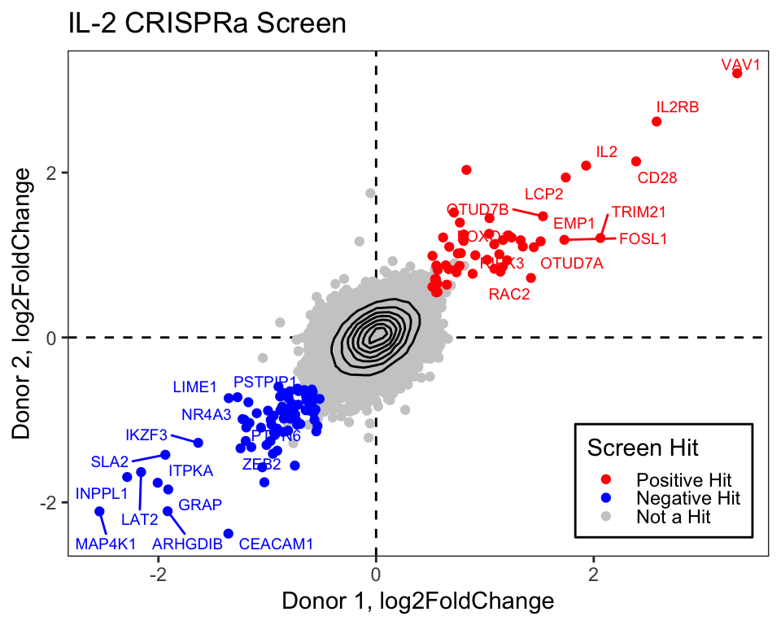

The key to accomplishing any analysis is to start by understand what your data looks like and how it’s organized. This might include:
What type of files are you working with?
How do they get loaded into R?
What is the size of the dataset?
What types of questions can I ask of the data?
library(dplyr)file <-"/cloud/project/data/single_cell_rna/cancer_cell_id/mcb6c-exome-somatic.variants.annotated.clean.filtered.tsv"print(file)# File is a "tsv" file -> Tab-delimited fileread_tsv <-read.csv(file, sep ='\t')# Look at the file: View(), head(), or click on it to the rightView(read_tsv)head(read_tsv)# Understand the variables and data structure: typeof(), str(), colnames()typeof(read_tsv)str(read_tsv)colnames(read_tsv)
Common challenges
NaN and missing data
Dealing with missing data and NaN (Not a Number) values is a common challenge in R programming. These values can affect the results of your analyses and visualizations. It’s essential to handle missing data appropriately, either by imputing them or excluding them from the analysis, depending on the context.
Example:
# Creating a dataframe with missing valuesdf <-data.frame(x =c(1, 2, NA, 4),y =c(5, NA, 7, 8))# Check for missing valuessum(is.na(df))
# Understanding missing or sparse informationsummary(read_tsv)read_tsv[!complete.cases(read_tsv),]
Data organization and structure: Factors
Columns that contain strings are automatically read in as character vectors and are arranged alphanumericall. Factors assign a logical order to a series of samples.
file <-"/cloud/project/data/single_cell_rna/cancer_cell_id/mcb6c-exome-somatic.variants.annotated.clean.filtered.tsv"print(file)# File is a "tsv" file -> Tab-delimited fileread_tsv <-read.csv(file, sep ='\t')# Organize the chromosomes to the correct order# If CHROM is a character vector, the chromosomes are not ordered properlystr(read_tsv) # Shows that CHROM variable is a character vectorggplot(read_tsv, aes(x = CHROM)) +geom_bar() +theme(axis.text.x =element_text(angle =45, hjust =1))# make CHROM a factorread_tsv$CHROM <-factor(read_tsv$CHROM, levels =paste0("chr", c(1:22, 'X','Y')))str(read_tsv) # shows that CHROM variable is a factor with a set order of character stringsggplot(read_tsv, aes(x = CHROM)) +geom_bar() +theme(axis.text.x =element_text(angle =45, hjust =1))
Missing packages or dependencies
When running R code, you may encounter errors related to missing packages or dependencies. This occurs when you try to use functions or libraries that are not installed on your system. This will commonly look like a red error stating “There is no package…” Installing the required packages using install.packages(“package_name”) can resolve this issue.
# Trying to use a function from an uninstalled packagelibrary(ggplot2)ggplot(df, aes(x, y)) +geom_point()# Error: there is no package called 'ggplot2'
Where do I go for help?
Stack Exchange
Online communities like Stack Exchange, particularly the Stack Overflow platform, are excellent resources for getting help with R programming. You can search for solutions to specific problems or ask questions if you’re facing challenges. If you attempt to Google what you’re trying to accomplish with your dataset, StackExchange often includes responses from others who may have gone through this effort before. With the open crowdsourcing of troubleshooting, these responses that work for others are “upvoted” so that you can try to adapt the code to work for your dataset. Importantly, take care to change the names of variables and file paths in any code that you try to implement from others.
ChatGPT
ChatGPT is an AI assistant that can provide guidance and answer questions related to R programming. You can ask for clarification on concepts, debugging assistance, or advice on best practices. If you copy/paste an error into ChatGPT, it often tries to debug without any other preface. However, if you try to explain exactly what your code is trying to accomplish, it can be a helpful way to debug your help.
Good practices
##Commenting your code Adding comments to your code is crucial for making it more understandable to yourself and others. Comments provide context and explanations for the code’s functionality, making it easier to troubleshoot and maintain.
Publicly accessible resources
Github
Github hosts numerous repositories containing R scripts, packages, and projects. Browsing through repositories and contributing to open-source projects can help you learn from others’ code and collaborate with the R community. This can be a direct way to make your code available upon publication, according to journal practices.
How do I apply the code I’ve learned to my own data?
Once you’ve learned R programming basics, applying the code to your own data involves understanding your data structure, identifying relevant functions and packages, and adapting example code to suit your specific analysis goals.
Additional practice
# Read in the file "/cloud/project/data/bulk_rna/GSE48035_ILMN.Counts.SampleSubset.ProteinCodingGenes.tsv"# Describe the size, shape, and organization of this data file.# Example: Applying code to your own data# Load your datasetmy_data <-read.csv("my_data.csv")# Explore the structure of your datastr(my_data)# Identify relevant variables and features# HINT: Use colnames() and tidyverse functions to clean up your data# Perform analysis or visualization using appropriate functions and packages# HINT: Use ggpubr functions to parallelize statistics across groups# Adapt example code to suit your data and analysis goals# HINT: Try different methods of plotting. Consider what important features you're trying to understand and show with this data.# Comment your code for clarity and future reference# HINT: Make your life easier when it comes time for reproducing your figures and filling in that "Data and Code Availability" section of your manuscript.
First we will load the data from the supplemental table (download here):
library(tidyverse)library(readxl)library(ggrepel)log2_df <-read_excel("data/science.abj4008_table_s2.xlsx")# Always good practice to check the data to ensure it was loaded correctly:# head(log2_df)# The plot only contains the IL2 results from CRISPRa screens,# so we will filter downlog2_df_filter <- log2_df %>%filter(Cytokine =="IL2", CRISPRa_or_i =="CRISPRa")# Select genes that we want to label based on top LFCngenes_label <-16label_genes <- log2_df_filter %>%filter(Screen_Version =="Primary") %>%# For ease only use primary donorgroup_by(sign(LFC)) %>%# Group by the sign (pos or neg) lfcarrange(desc(abs(LFC))) %>%# Sort by descending absolute lfc valuesslice_head(n = ngenes_label) %>%# Take the top n genespull(Gene) # Pull these out from the data frame# We need to pivot the Screen_Version variable (which is equivalent to Donor1 and Donor 2) into separate columnslog2_df_filter_wide <- log2_df_filter %>%pivot_wider(id_cols =c("Gene", "Hit_Type"), names_from ="Screen_Version", values_from ="LFC") %>%filter(!is.na(Primary), !is.na(CD4_Supplement))# Reorder the factor so that we can plot the hits on toplog2_df_filter_wide$Hit_Type <-factor(log2_df_filter_wide$Hit_Type,levels =c("Positive Hit", "Negative Hit", "NA"),labels =c("Positive Hit", "Negative Hit", "Not a Hit"))# Now we can plot:final_plot <- log2_df_filter_wide %>%# This will order by the factor so the hits are plotted on toparrange(desc(Hit_Type)) %>%ggplot(aes(x = Primary, y = CD4_Supplement)) +geom_hline(yintercept =0, linetype ="dashed") +geom_vline(xintercept =0, linetype ="dashed") +geom_point(aes(color = Hit_Type)) +stat_density_2d(color ="black") +# For this geom text, we filter the original data to only include# genes that we want labeled from the above filteringgeom_text_repel(data =filter(log2_df_filter_wide, Gene %in% label_genes),aes(label = Gene, colour = Hit_Type),size =0.36*7, show.legend = F ) +scale_colour_manual(values =c("Positive Hit"="red", "Not a Hit"="grey80", "Negative Hit"="blue")) +theme_bw() +theme(panel.grid =element_blank(),# Place legend inside the plotlegend.position =c(0.85, 0.15),# Change vertical spacing between legend itemslegend.key.height =unit(3, "mm"),# Place a box around the legendlegend.background =element_rect(fill =NA, color ="black") ) +labs(x ="Donor 1, log2FoldChange",y ="Donor 2, log2FoldChange",title ="IL-2 CRISPRa Screen",color ="Screen Hit" )# We can save our plot if desiredggsave(final_plot, file ="my_pretty_plot.pdf", width =5, height =4)# And now view itfinal_plot

Where do I go for practice?
CodeFights
CodeFights (now CodeSignal) offers coding challenges and exercises in R and other programming languages. Practicing coding problems can help reinforce your skills and improve your problem-solving abilities.